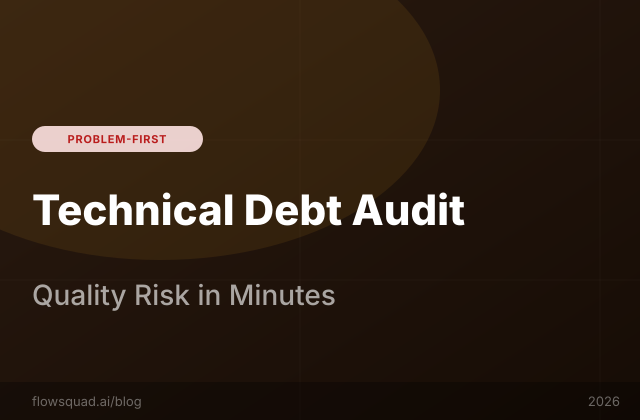

FlowSquad's quality risk analysis scores every module for test density, complexity, and security risk — giving you a prioritised refactoring roadmap in minutes, not weeks.
Technical debt is often discussed as a single monolithic problem, but in practice it's a portfolio of risks with very different profiles. A 5-year-old module that nobody has touched in 3 years and that handles a stable, well-understood process is technically "debt" — but it poses minimal risk. The dangerous debt is the combination of factors that create fragility:
A module that scores high on all five dimensions is a ticking clock. FlowSquad's quality risk analysis surfaces these modules by computing a composite risk score across all dimensions for every file in your codebase — automatically, continuously, and without requiring manual audit work from your senior engineers.
FlowSquad offers two scanning modes with different depth-speed tradeoffs:
Most teams run Quick Scan as a CI gate and Deep Scan on a weekly schedule, with an additional Deep Scan before major releases. The combination provides continuous coverage without the overhead of running a full analysis on every commit.
Cyclomatic complexity (McCabe complexity) measures the number of linearly independent paths through a function's source code. Each conditional branch (if, else if, while, for, catch, case) adds one to the complexity count. A function with a complexity of 1 has a single execution path; a complexity of 15 means there are 15 independent paths that each need to be tested.
FlowSquad calculates cyclomatic complexity at three granularities:
| Complexity Score | Risk Level | Recommended Action |
|---|---|---|
| 1–10 | LOW | Standard testing practices sufficient |
| 11–20 | MEDIUM | Add test coverage; flag for refactoring consideration |
| 21–50 | HIGH | Prioritise for refactoring; mandatory test coverage |
| 50+ | CRITICAL | Immediate refactoring required; accept no new features until addressed |
FlowSquad's risk scoring weights cyclomatic complexity most heavily when combined with low test density — a complexity-30 function with 90% test coverage is manageable; the same function with 0% test coverage is a critical risk.
FlowSquad's Deep Scan output is designed to translate directly into actionable sprint work — not just a PDF report that sits in a shared drive. The workflow:
# Example: FlowSquad Deep Scan risk report (JSON excerpt)
{
"scan_id": "dscan-20260226-001",
"codebase_stats": {
"total_files": 847,
"total_loc": 341200,
"scan_duration_seconds": 1124
},
"high_risk_modules": [
{
"file": "billing/invoice_processor.py",
"risk_score": 91,
"factors": {
"cyclomatic_complexity_max": 47,
"test_density": 0.08,
"security_findings": 2,
"change_frequency_30d": 14,
"inbound_dependencies": 23
},
"summary": "Core billing module with no meaningful test coverage, SQL injection risk on line 203, and 14 changes in the last 30 days. Highest-priority remediation target.",
"estimated_remediation_hours": 24,
"suggested_jira_label": "tech-debt-critical"
}
]
}FlowSquad's Deep Scan risk report is available in three formats: an interactive dashboard in the FlowSquad UI, a downloadable PDF for engineering leadership, and a JSON/CSV export for custom tooling. The report includes:
SonarQube's quality gate is a pass/fail threshold on specific metrics (coverage %, duplication %, complexity). FlowSquad's quality risk score is a composite, ranked metric designed for prioritisation — it answers "which modules should we fix first?" rather than "does this PR pass?" The two tools are complementary: SonarQube as a CI gate, FlowSquad as a strategic risk prioritisation layer. FlowSquad's scores also incorporate security findings from OWASP scanning and business risk factors (like change frequency) that SonarQube doesn't measure.
FlowSquad uses language-native AST parsing for complexity measurement — not regex-based approximations. Python modules use the ast module; JavaScript/TypeScript uses a Babel-based AST; Java and Kotlin use a JavaParser-based AST. Accuracy is very high (>99%) for well-formed code. Minified, obfuscated, or auto-generated code (e.g., migration files) should be excluded from analysis using FlowSquad's exclude patterns configuration.
We recommend Quick Scan on every PR as a CI gate (30–90 seconds, minimal overhead) and Deep Scan weekly (typically as a scheduled Friday run) to produce the full risk report. Additionally, run a Deep Scan before any major release and before PI planning to have a current view of codebase health when making planning decisions.
FlowSquad's risk report includes an incident probability estimate for each high-risk module, calibrated against the risk factor combination (high complexity + low tests + high change frequency is a well-studied predictor of defect rate). While not a precise financial forecast, the report surfaces "this module is 4.2x more likely to cause a production incident than the average module" — giving engineering managers objective language for prioritising debt work in planning discussions.
FlowSquad integrates with git history to show which commits introduced complexity spikes, removed test coverage, or introduced security findings — but the reports are designed for remediation prioritisation, not blame attribution. The git-history integration is used to calculate change frequency and to understand which changes caused risk score increases, enabling more targeted refactoring rather than full rewrites.